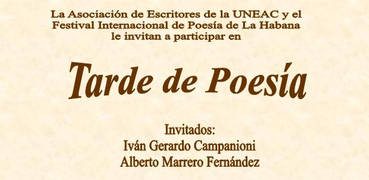

 Alberto Marrero Fernández nació en La Habana, 1956. Poeta y narrador. Il appartenait au Comité organisateur de la poésie internationale Festival de Medellín 1986 publicó su primer poemario con el título Inclinación de balanza bajo el sello editorial Extramuros. Autor del poemario El pozo y el péndulo, publicado en la primera edición de la colección Pinos Nuevos, Letras Cubanas, en1994. Con La salvación y el eclipse obtuvo mención en el concurso Julián del Casal de la UNEAC, dans 1991. Dans 2001 obtuvo el Primer Premio del concurso de poesía Regino Pedroso, del periódico Trabajadores. Dans 2003 conquistó el Premio Nacional de Narrativa Hermanos Loynaz con el libro Último viento de marzo, posteriormente publicado bajo el sello de Ediciones Loynaz en el 2005 y reeditado en el 2010. Su libro Los ahogados del Tíber mereció en 2004 el premio de cuento del concurso Luís Rogelio Nogueras, del Centro del Libro y la Literatura en Ciudad de La Habana, publicado por Ediciones Extramuros en el 2005. Ese propio año Ediciones Unión dio a conocer su poemario La cercanía infinita. Dans 2007 publicó el libro de cuentos Efecto Babel por la Editorial Letras Cubanas. Premio de poesía Julián del Casal de la UNEAC 2009 con el libro El límite del tiempo abolido y premio de cuento de La Gaceta de Cuba también en el 2009. Su obra poética y narrativa ha sido publicada en numerosas revistas nacionales. Poemas y cuentos suyos aparecen en las siguientes antologías: Poésie de hoy en Cuba, Editorial Zero, 1991, Espagne; Cuentos conaroma de tabaco, Editorial Popular, 2008, Espagne; Entre los poros y las estrellas, Casa Editora Abril, 2009; Caminos de humo, Editorial Oriente, 2009. Máster en Historia en 1989. Miembro de la UNEAC.
Alberto Marrero Fernández nació en La Habana, 1956. Poeta y narrador. Il appartenait au Comité organisateur de la poésie internationale Festival de Medellín 1986 publicó su primer poemario con el título Inclinación de balanza bajo el sello editorial Extramuros. Autor del poemario El pozo y el péndulo, publicado en la primera edición de la colección Pinos Nuevos, Letras Cubanas, en1994. Con La salvación y el eclipse obtuvo mención en el concurso Julián del Casal de la UNEAC, dans 1991. Dans 2001 obtuvo el Primer Premio del concurso de poesía Regino Pedroso, del periódico Trabajadores. Dans 2003 conquistó el Premio Nacional de Narrativa Hermanos Loynaz con el libro Último viento de marzo, posteriormente publicado bajo el sello de Ediciones Loynaz en el 2005 y reeditado en el 2010. Su libro Los ahogados del Tíber mereció en 2004 el premio de cuento del concurso Luís Rogelio Nogueras, del Centro del Libro y la Literatura en Ciudad de La Habana, publicado por Ediciones Extramuros en el 2005. Ese propio año Ediciones Unión dio a conocer su poemario La cercanía infinita. Dans 2007 publicó el libro de cuentos Efecto Babel por la Editorial Letras Cubanas. Premio de poesía Julián del Casal de la UNEAC 2009 con el libro El límite del tiempo abolido y premio de cuento de La Gaceta de Cuba también en el 2009. Su obra poética y narrativa ha sido publicada en numerosas revistas nacionales. Poemas y cuentos suyos aparecen en las siguientes antologías: Poésie de hoy en Cuba, Editorial Zero, 1991, Espagne; Cuentos conaroma de tabaco, Editorial Popular, 2008, Espagne; Entre los poros y las estrellas, Casa Editora Abril, 2009; Caminos de humo, Editorial Oriente, 2009. Máster en Historia en 1989. Miembro de la UNEAC. Iván Gerardo Campanioni nació en San Cristóbal, Pinar del Rio, dans 1942. Dans 1959 ingresa en la Asociación Esperanza de la Fraternidad, de jóvenes masones. Fundador de la Asociación de Jóvenes Rebeldes y de la Unión de Jóvenes Comunistas. Poeta firmante del manifiesto “Nos pronunciamos” publicado en la primera salida de El Caimán Barbudo, dans 1966. Sus poemas aparecieron en el volumen Cinco jóvenes poetas, publicado por la UNEAC, dans 1965. Miembro fundador de la Brigada Hermanos Saíz. Trabajó en el periódico Hoy, del Partido Socialista Popular y en el diario Granma del Partido Comunista de Cuba. Movilizado durante la invasión de Playa Girón y la Crisis de Octubre. Mecanógrafo, cortador de caña durante la Zafra de los 10 millions, miliciano, archivero, maître, textilero, administrador de tiendas, funcionario de comercio interior, constructor, líder sindical.
Iván Gerardo Campanioni nació en San Cristóbal, Pinar del Rio, dans 1942. Dans 1959 ingresa en la Asociación Esperanza de la Fraternidad, de jóvenes masones. Fundador de la Asociación de Jóvenes Rebeldes y de la Unión de Jóvenes Comunistas. Poeta firmante del manifiesto “Nos pronunciamos” publicado en la primera salida de El Caimán Barbudo, dans 1966. Sus poemas aparecieron en el volumen Cinco jóvenes poetas, publicado por la UNEAC, dans 1965. Miembro fundador de la Brigada Hermanos Saíz. Trabajó en el periódico Hoy, del Partido Socialista Popular y en el diario Granma del Partido Comunista de Cuba. Movilizado durante la invasión de Playa Girón y la Crisis de Octubre. Mecanógrafo, cortador de caña durante la Zafra de los 10 millions, miliciano, archivero, maître, textilero, administrador de tiendas, funcionario de comercio interior, constructor, líder sindical.
Dans 2006 fue distinguido en el Concurso Regino Pedroso de la CTC. Preside una filial de la Cátedra del Adulto mayor. Es delegado del Poder Popular en una circunscripción de la Habana Vieja. Sus poemas han aparecido en las revistas Unión, Casa de las Américas, Le Cayman barbu, la Gaceta de Cuba y otras revistas y periódicos. Dans 2009 la Editorial José Martí publicó su libro La criatura.
TRES POEMAS DE IVAN GERARDO CAMPANIONI
APLAUSOS
Hoy amanecí con ganas de aplaudir
y aplaudí por aquello
por esto y por lo otro
Me paré frente al espejo
y aplaudí
Aplaudí al Comandante t a la Palma
por el prestigio
que le han dado al escudo
Me aplaudí a mí mismo y a Walt Whitman
por haber estado prohibido en su tiempo
Aplaudí a la luna
por los servicios prestados
a la Humanidad
Aplaudí tanto
que las manos no podía moverlas
de tantos aplausos que había en la habitación
Abrí de par en par las ventanas
y los aplausos salieron volando
llenando el mundo de palmadas.
NOTICIA
Acaba de suicidarse
el cadáver político de mi parte oscura
la filosofía no hablaba nada de él
Por favor no manden flores
se aceptan críticas
PERFUME DE PIRIPIRI
Te pareces un poco al perfume Piripiri
porque es afrodisíaco
Viene en frasco pequeño
Tiene atomizador
Despide una fragancia que podría
enloquecer a muchas narices
Su precio es módico
Y lo más importante
tiene un fijador imperecedero
Lo que siempre te faltó a ti
para que quedaras
UN JUICIO SOBRE EL AUTOR
Yo diría que la suya es una poesía intensamente conversacional, que no desdeña incluso el lenguaje callejero. Pero si se ve únicamente así, creo que se está perdiendo lo esencial de su manera de acercarse al poema. A esta poesía se le ha reprochado su desatención de la metáfora. En effet, mientras el texto lezamiano es una incesante progresión metafórica, esta poesía parece desdeñar ese tropo central, tan importante para algunos poetas vanguardistas.
Lo interesante de los textos de Campanioni es que busca el efecto que podría producir la metáfora a través de otros caminos del lenguaje. .. Cuando la vida le ha dado a uno la satisfacción de contemplar la obra de aquel “grupito” de soñadores… Entre ellos, sin que quede la menor duda, en la primera fila, está Iván Gerardo Campanioni.
Guillermo Rodríguez Rivera.
Prólogo a La criatura, Editorial José Martí, La Havane, 2009.
TRES POEMAS DE ALBERTO MARRERO
UN DÍA
Un día me percaté que estaba solo.
Debió ocurrir a principios de los setenta
cuando mi madre anunció que no habría arroz por largo tiempo
y yo descubría que Homero era ciego y memorioso,
Poe impotente y Nietzsche sifilítico,
y entonces comencé a usar la ropa reciclada
que poco a poco iba heredando de mi padre.
Un día comprendí el sentido irreversible del pasado
oyendo una banda de rock que escalaba al cielo.
Debió ocurrir frente una pared pintarrajeada
que proclamaba un futuro radiante y sin fin.
PUERTA
Hay una puerta a la que nunca he tocado.
Una puerta de vetas oscuras y bisagras enmohecidas
a través de la cual se oyen voces de ángeles.
Desde niño supe que no la cruzaría,
no sé si por espanto o simple precaución.
Todos tenemos una puerta que jamás abriremos,
aunque del otro lado se escuchen voces de ángeles.
LA ROPA EN EL CORDEL
Los momentos vividos se parecen
a las ropas colgadas del cordel.
Unas raídas, con viejas manchas
que el detergente no ha logrado borrar,
otras nuevas, compradas a precios delirantes.
En el patio la ropa recién lavada gotea
sobre calabazas rastreras y oréganos,
y uno sabe que el tiempo es despiadado,
que el pensamiento también puede ser despiadado
cuando la soberbia o la modorra aturden,
y la existencia parece ser tan ondulante
como las ropas del cordel batidas por el viento.